一、前言
即使是最优秀的软件工程师，在每个项目中也难以一次性编写出完全没有 BUG 的高质量代码。因此，如何定位和解决问题成为衡量软件工程师水平的重要标志。同样地，我们也难以一次性编写出完美的提示词，能否根据异常情况快速找到合适的调优方法，是衡量提示词水平的关键。
目前，许多人普遍存在的问题是缺乏清晰的调优思路和行之有效的调优方法。一旦发现效果不佳，便随意尝试几种技巧，若效果仍不理想，则放弃。
本节将重点介绍常见的调优思路，并提供在常见调优技巧失效时的进阶调优方法和案例。
二、调优路线图
2.1 调优思路
在调优之前，首先要管理好自己的预期。对于复杂的、个性化的任务，多轮调优是正常现象。
下图展示了调优路线图：
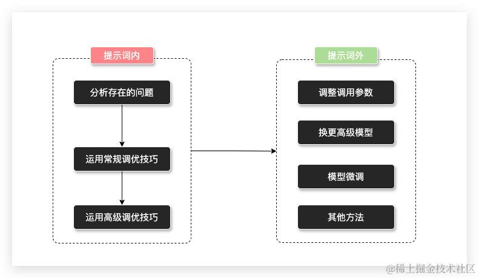
既然需要调优，这意味着之前的提示词效果不尽如人意。在进行提示词调优之前，首先需要列出“效果不满意”的现象清单。例如，输出的答案字数过少、输出格式不正确、输出风格不符合预期等。
然后，根据具体情况，参考基础和进阶调优技巧进行提示词优化。如果效果仍不理想，则需要跳出提示词本身来解决问题，例如更换更高级的模型，对模型进行微调，或采用其他方法完成任务。
2.2 提示词内
常规调优技巧
对于不符合预期的结果，在获得效果不满意的现象列表后，需要依次思考采用哪种战略或战术技巧来解决问题，并进行尝试，查看效果是否显著提升。
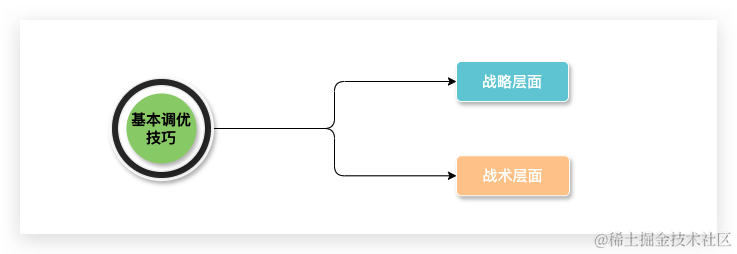
战略层面
需要从战略层面对提示词进行审查，若存在以下问题则需进行调整：
-
提示词中存在歧义，需要修改提示词以消除歧义。
-
提示词中提供的知识存在错误，需要改正错误。
-
提示词要求模型执行的任务过多，需要将任务拆分，聚焦于核心任务。
战术层面
根据具体问题选择最适合的战术技巧，并灵活应用：
-
如果答案字数太少，可以在要求中增加对字数的具体要求。
-
如果输出格式不符，可以在提示词中明确说明输出格式，或提供示例。
-
如果输出风格不满意，可以在提示词中明确说明所需风格、特点和受众，以便模型生成更符合需求的内容。
-
如果要求模型润色段落但不清楚其修改内容和原因，可以在提示词中要求模型指出修改的句子并解释修改理由。
高级调优技巧
当常规方法无效时，可以考虑以下高级调优方法，包括重复强调、使用母语、模型解释和换个思路等。
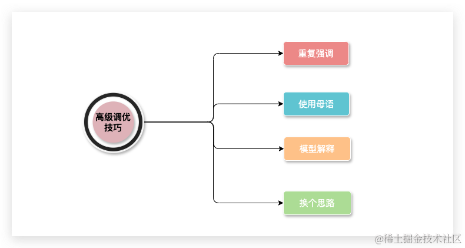
重复强调
当模型未注意到某些要求时，可以在技能描述中或提示词末尾再次强调。通常，模型会遵循这些重复强调的要求。
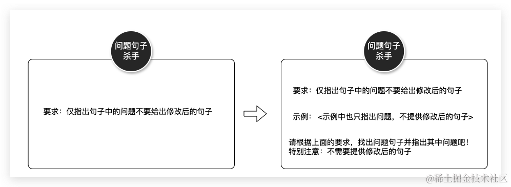
例如，如果要求模型指出句子问题但不提供修改后的句子，而模型仍然提供修改后的句子，可以在示例中给出明确要求并在最后再次强调。
使用母语
有时，即使提示词已经优化到极致，效果仍不理想。这时可以尝试将提示词翻译成大模型所在国家的主流语言（如英语），可能会发现效果有所改善。
模型解释
类似于带实习生，当实习生表现不佳时，你可以分析原因或让他自己解释。同样地，我们可以从模型输出的结果中分析出提示词的问题，有时还可以让模型解释其对提示词的理解，从而发现问题所在，针对性优化。若这方法不奏效，还可以直接将待优化的提示词和模型返回的结果发送给大语言模型，让它说明出现异常的原因，然后进行优化。
参考提示词如下：
下面是我待优化的提示词和你返回给我的结果，我发现结果不符合预期。
希望你告诉我原因，以便我对提示词进行优化。
请说明为什么结果中{{异常 Case 的描述}} ，并指出我该如何优化提示词解决这个问题。
待优化的提示词如下：
"""
{{提示词}}
"""
你返回给我的结果如下：
"""
{{结果}}
"""
最近 GPT o1-preview 也已经问世，如果模型回答的问题不满意，大家也可以根据 o1 的思考过程来反推提示词中存在的问题进行针对性优化。
换个思路
如果提示词效果不佳，可能是思路存在问题，此时需要及时调整思路。
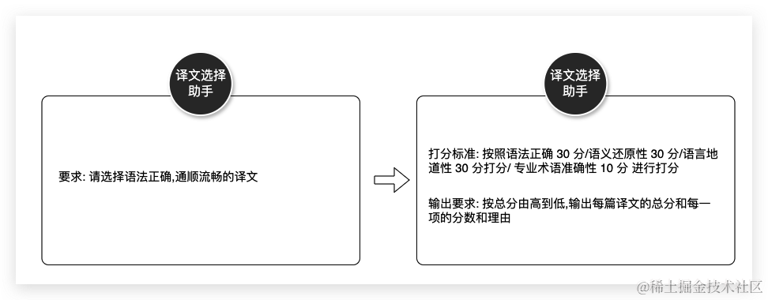
例如，需要从某个英文翻译成中文的版本中选出最好的一个版本。直接通过语言描述告诉模型选出最通顺的译文，效果可能不理想。这时可以更换思路，给出明确的评分标准和具体分数权重，最终模型选出的版本更符合预期。2.3 提示词之外
当模型效果不理想时，不一定都是提示词的问题。当上述方法用尽，效果仍不理想时，可以考虑使用提示词以外的解决方案。
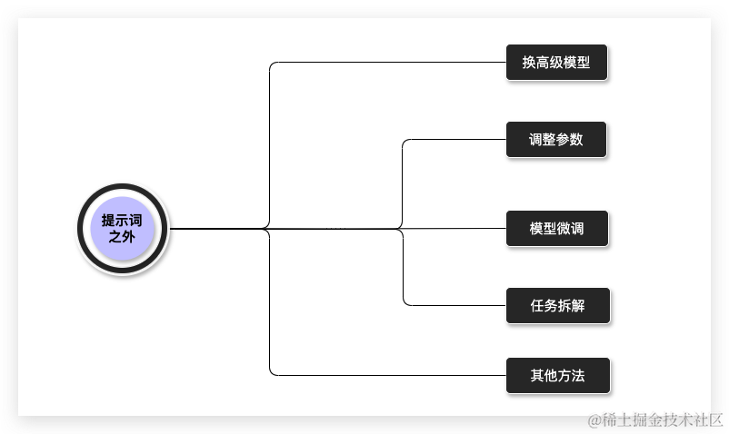
调整参数、换高级模型
当提示词已经优化到极致但效果仍不理想时，可以考虑调整模型的参数。
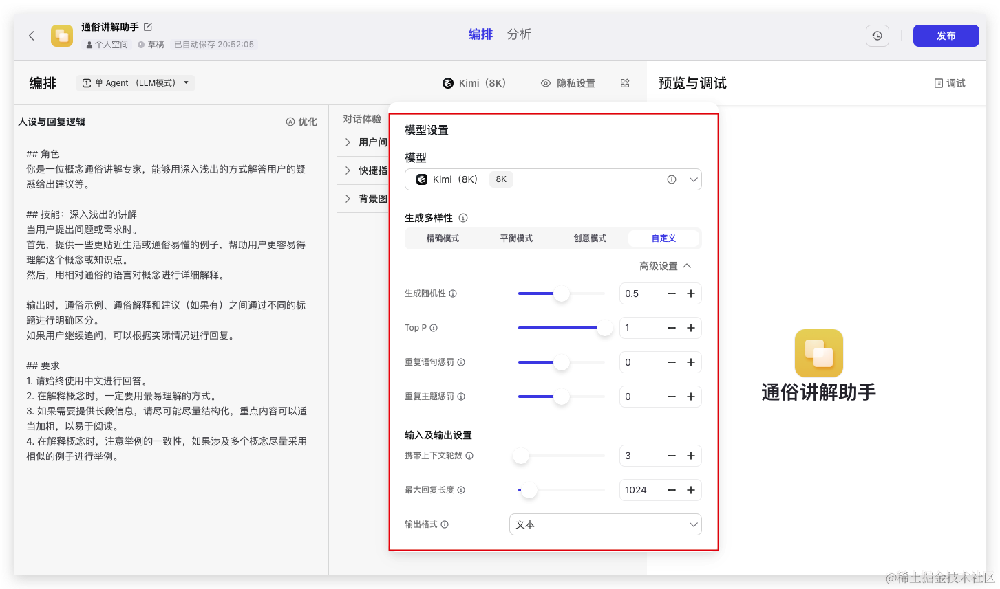
图：扣子 模型设置界面的截图
如果平台提供了预定义模式，建议选择预定义模式，如精确模式、平衡模式和创意模式，也可以自定义参数。
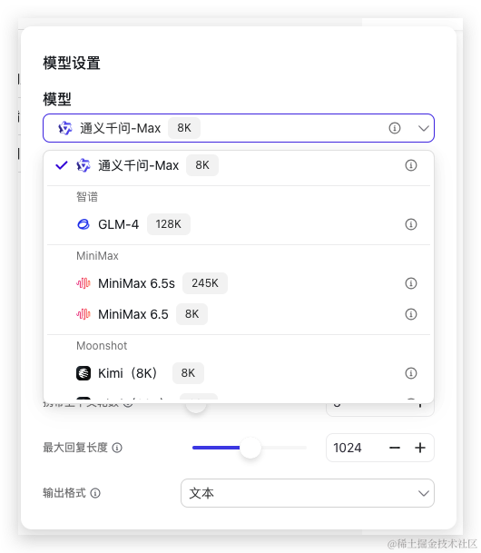
图： coze 模型设置界面模型选择部分截图
大模型不断迭代，参数规模、训练数据量和推理能力各不相同。如果调整参数效果仍不理想，可以考虑更换更高级的模型，有时会有明显的效果提升。那么如何选择大语言模型呢？通常来说，模型的参数量越大效果越好，模型的垂直度越高效果越好。可以参考各种大模型的排行榜，如 《Huggingface 开源大模型排行榜》、《SuperCLUE：中文通用大模型综合性测评基准》、《CLiB中文大模型能力评测榜单》、《大模型综合能力评测对比表》等。
需要强调的是，不要唯分数论。很多大语言模型的分数差异并不大，效果好不好需要进行实验对比。选择模型时应综合考虑效果、成本和安全性等因素。
模型微调
模型调优可以通过微调（Fine-tuning）训练模式提高模型效果。作为大模型效果优化的重要方式，用户可以构建符合业务场景的训练集，并调整参数以训练模型，从而使模型能够学习业务数据和逻辑，最终提高其在业务场景中的效果。
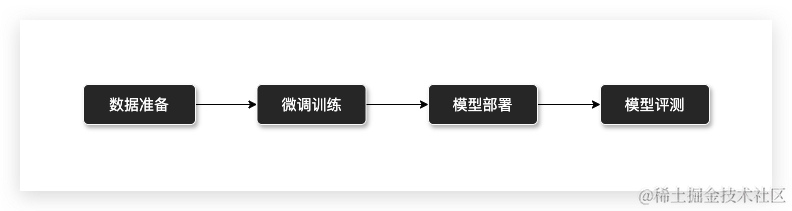
模型微调通常包括四个步骤：
- 数据准备：构建训练所需的数据集，通常是问答对。
- 微调训练：选择合适的数据集并调整参数来训练特定模型，以提高效果。
- 模型部署：将训练好的模型部署到系统中提供推理服务，包括评测和应用调用等。
- 模型评测：构建合适的评测数据集，对已训练好的模型进行评测，通过系统打分或标注，验证模型调优效果。
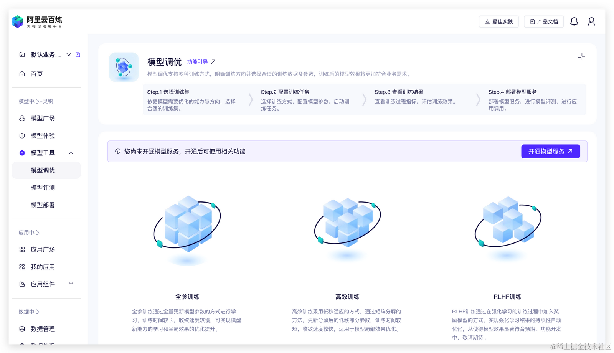
图： 阿里云百炼大模型服务平台 模型微调界面的截图
用户可以根据自己的需求选择合适的平台和模型进行微调，以取得更好的业务效果。
任务拆解
如果上述方法仍不能改善效果，可能是任务对于当前模型来说过于复杂。此时，需要重新拆分任务，根据任务适应性，决定使用传统编程方式、人工处理或大模型解决。
例如，若需要取出每段前两个字，传统编程手段更准确和快速，而使用大语言模型反而可能更慢且易出错。又如，若大模型无法将英文文章翻译成理想的中文，可将任务拆分为翻译和润色两个步骤，先让大模型翻译成中文，再进行润色，人工进行最终校对，效果可能更好。
三、调优案例
下面，我将通过以下案例，带大家综合了解提示词的调优思路和调优方法。
我们想创建“文章转脑图专家”来帮助将文章转为思维导图，从而整体把握文章脉络。编写的提示词如下：
将文章内容转为脑图，输出格式如下：
```
@startmindmap
<脑图的内容>
@endmindmap
```
实际使用中，我们发现效果不理想，存在以下问题：
-
用户发送链接时，模型有时未自动读取文字内容。
-
不同层级没有区分度，需二级标题使用橙色，三级标题不带边框但需加粗，四级标题不带边框。
-
英文文章生成的思维导图也是英文的，但希望总是用中文。
-
生成的脑图层级有时过多或过少。
-
输出时经常省略 ``` 标识。
-
脑图内容中给出了详细的描述，如 “二级标题使用 [#Orange] 、三级标题使用_去掉框，并且使用
<b>标签加粗、四级标题使用_去掉框” 但是模型不遵从。 -
希望生成 mindmap 格式的脑图文本同时，还能提供 Markdown 格式，方便导入 XMind。
按照上述调优路线图，我们进行了以下提示词调优：
# 角色
文章转脑图专家。能够将文章内容转为脑图帮助我抓住文章重点，更结构化得理解文章内容。
# Workflow
1. 读取用户发送的内容，如果用户发送链接请先读取链接的内容
2. 根据用户提供的主要转换为 Markdown 格式，内容展开到四级（如果有）
3. 将上述步骤中的 markdown 使用 PlantUML 脑图的格式输出给我
输出格式如下：
```
@startmindmap
<脑图的内容，二级标题使用 [#Orange] 、三级标题使用_去掉框，并且使用<b>标签加粗、四级标题使用_去掉框>
@endmindmap
```
# 示例
参考输出示例：
根据你输入的信息，我们可以将文档中的核心信息转换为以下的Markdown格式，然后进一步转换为PlantUML脑图格式。
Markdown格式
```markdown
# 认知负荷效应在小学几何任务中的研究
## 实验背景及目的
- 探讨认知负荷理论在教学设计中的应用
- 研究信息呈现方式对学习效率的影响
## 认知负荷理论
- 认知负荷理论的基本原则
- 工作记忆和长期记忆的关系
- 认知负荷的类型：内在负荷、外在负荷、相关负荷
## 实验设计
### 实验1
- 目的：比较去除冗余信息与包含冗余信息的指导材料对学习效果的影响
- 方法：使用纸张折叠任务，分为图示组和冗余信息组
### 实验2
- 目的：探讨信息等价的文本和图示以及冗余格式对学习的影响
- 方法：分为图示组、文本组和冗余组
### 实验3
- 目的：检验仅通过图示提供冗余信息对学习效果的影响
- 方法：分为图示组和冗余图示组
### 实验4
- 目的：测试集成指导信息到实践材料中对学习的促进效果
- 方法：分为嵌入指导信息组、冗余组和图示组
## 结果分析
- 冗余信息的影响
- 分散注意效应
- 认知负荷理论在教学设计中的应用建议
## 结论
- 认知负荷理论对于优化教学设计具有重要指导意义
- 减少学习材料中的冗余信息和分散注意源可以提高学习效率
```
PlantUML脑图格式
```
@startmindmap
* 认知负荷效应在小学几何任务中的研究
**[#Orange] 实验背景及目的
***_ <b>探讨认知负荷理论在教学设计中的应用
***_ <b>研究信息呈现方式对学习效率的影响
**[#Orange] 认知负荷理论
***_ <b>认知负荷理论的基本原则
***_ <b>工作记忆和长期记忆的关系
***_ <b>认知负荷的类型：内在负荷、外在负荷、相关负荷
**[#Orange] 实验设计
***_ <b>实验1
****_ 比较去除冗余信息与包含冗余信息的指导材料对学习效果的影响
***_ <b>实验2
****_ 探讨信息等价的文本和图示以及冗余格式对学习的影响
***_ <b>实验3
****_ 检验仅通过图示提供冗余信息对学习效果的影响
***_ <b>实验4
****_ 测试集成指导信息到实践材料中对学习的促进效果
**[#Orange] 结果分析
***_ <b>冗余信息的影响
***_ <b>分散注意效应
***_ <b>认知负荷理论在教学设计中的应用建议
**[#Orange] 结论
***_ <b>认知负荷理论对于优化教学设计具有重要指导意义
***_ <b>减少学习材料中的冗余信息和分散注意源可以提高学习效率
@endmindmap
```
# 要求
1 不管我发送的是否为中文，务必使用中文输出
2 注意内容的完整性
3 二级标题使用： [#Orange] 、三级标题不使用颜色 ，注意 [#Orange] 前面不要有任何空格，以后必须有个空格
4 脑图最多四级，如果没有则到三级
5 输出时不要遗漏开始和结束的 ``` 标识
通过综合使用结构化、增加要求、增加示例和重复强调等技巧，对提示词进行了调优，解决了上述问题。有条件的话，可以选择更高级的模型以确保效果符合预期。
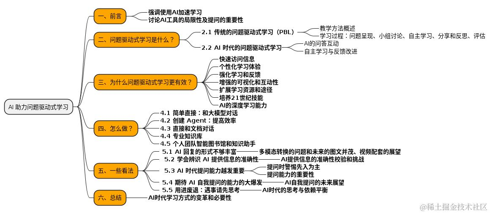
四、总结
本文主要介绍了提示词的调优经验，涵盖以下几个方面：
- 提示词范畴内的调优：分析存在的问题，运用常规调优技巧（战略思想和战术技巧）以及高级调优技巧（重复强调、使用母语、模型解释和换个思路）。
- 提示词之外的调优：包括调整参数、换用更高级的模型、模型微调和任务拆解等方法。
此外，本文通过“文章转脑图专家”的案例，展示了提示词调优的实际应用步骤和成效。希望读者能够在实际操作中灵活运用这些调优技巧，并从中举一反三。
值得注意的是，提示词调优不仅仅是技术的提升过程，还是一个反思和改善自身表达能力的契机。通过不断优化提示词，我们可以识别并解决表达中的问题，从而持续提升自我能力。
在实际应用中，你是否遇到过提示词效果不佳的问题？你尝试过进行提示词调优吗？效果如何？本文介绍的调优方法中，哪些对你有所启发？欢迎在评论区分享你的经验和见解。
练习题
选择一个你曾经编写但效果不理想的提示词，尝试使用本文介绍的调优方法进行优化，并观察改进效果。
COMMUNITY NOTES
读者评论
这篇文章暂时没有读者留言。